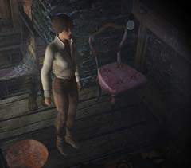

| 概要 | 地図 | |
| 淡いヒント集 | ヒント集 | 的確なヒント集 |
| 攻略最短ルート | Syberia 攻略へ |
| << 前の段階へ | 地域選択へ | 次の段階へ >> |
バラディレーン
|
庭園や森や洞窟

庭園に置かれているこの小さな鍵は、そばにある建物の横のカラクリに取り付ける鍵である。鍵を取り付けることにより、ハシゴがのび建物の屋根裏へ移動できる。 

屋根裏には、アンナの日記とインクが手に入る。また、モモに出会うことになるので心の準備を。

屋根裏の暗がりをよく見てみよう。電球がぶらさがっているはずだ。この電球を付けると、壁にマンモスの絵を刻んであるのが見えるはずだ。 このマンモスの絵に紙を当てて鉛筆でごしごしやれば、版画の要領でマンモスの絵ができる。これならば、モモが喜んでくれるはずだ。 
ダムのハンドルは自力で動かすことができない。モモに頼めば、動かしてくれるがハンドルが折れて使い物にならなくなってしまう。 折れた木の棒を拾ったら、ボートのオールを取りに行こう。木の棒でオールをたぐり寄せたら、モモに頼んでダムに取り付けて動かしてもらおう。 川の水位が下がり、洞窟へ行くことができる。そこで手に入るマンモスの人形は大切に取っておこう。 |
| << 前の段階へ | 地域選択へ | 次の段階へ >> |
| 概要 | 地図 | |
| 淡いヒント集 | ヒント集 | 的確なヒント集 |
| 攻略最短ルート | Syberia 攻略へ |
Syberia
| 目次へ戻る | ページの上部へ |